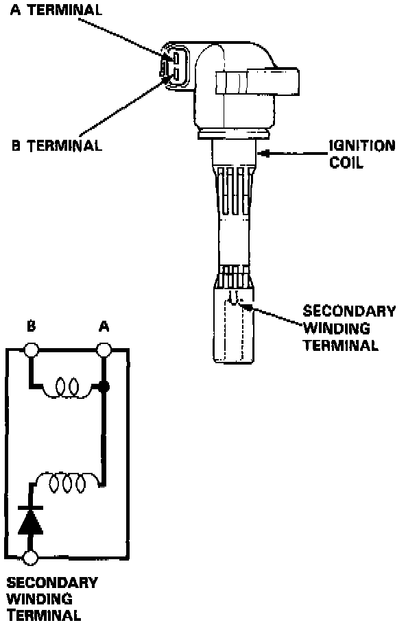

Ignition Coil: Testing and Inspection
1. With the ignition switch OFF, remove the ignition coil.NOTE: To remove the No. 6 ignition coil, remove the A/C suction line mounting bolts, and move the A/C suction line.

2. Using an ohmmeter, measure resistance between the terminals. Replace the coil if the resistance is not within specification.
NOTE: Resistance will vary with the coil temperature; specification is at 77°F (25°C).
Primary Winding Resistance (between the A and B terminals):
0.9 - 1.1 Ohms
- If the resistance is not, within specification, replace the coil.
- If the resistance is OK, but other troubleshooting doesn't reveal the cause of the problem, substitute a known-good ignition coil and check engine operation again.
If the engine then runs OK, replace the original coil.